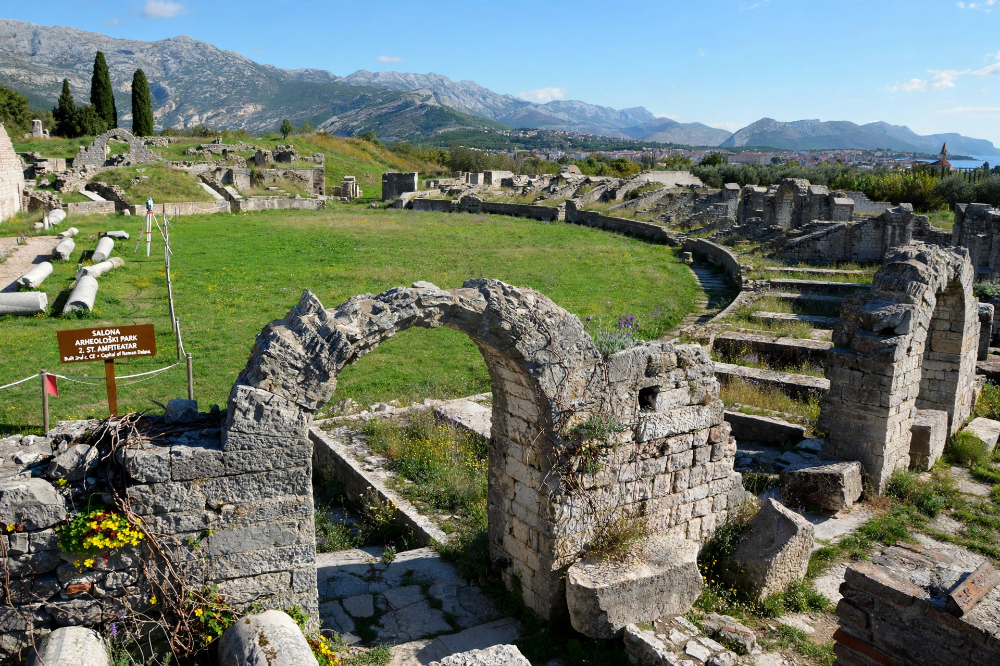

| Salona | |
|---|---|
| Location | Solin, near Split, Croatia |
| Region | Dalmatia |
| Status | Ruined; archaeological site |

Salona (Ancient Greek: Σάλωνα) was an ancient city and the capital of the Roman province of Dalmatia, located near modern Solin, Croatia. At its peak it was one of the largest cities of the Roman Adriatic, with a population often estimated at around 60,000.
Originally an Illyrian and Greek trading post, Salona became Roman after the Illyrian Wars and flourished as a colony under Julius Caesar and Augustus, with a forum, theatre, amphitheatre, aqueducts and early Christian basilicas and cemeteries — including the Manastirine burial complex of martyrs. It was the birthplace region of Emperor Diocletian, who retired to his palace nearby at Split.
Salona was destroyed during the Avar and Slav invasions of the 7th century (dates debated, traditionally 614 or 639); its inhabitants fled to the safety of Diocletian's Palace, founding Split. Excavations led by Frane Bulić from the late 19th century uncovered much of the site.